Cài BDS Studio trên máy tính
Làm một lần, khoảng 10–15 phút (bản Cá nhân). Bước cài không tốn phí, không cài phần mềm.
▶ Xem video hướng dẫn (khoảng 1 phút rưỡi, không tiếng)
Anh/chị cần có
- Máy tính Windows hoặc Mac, trình duyệt Chrome, Edge hoặc Safari.
Điện thoại, máy tính bảng (cả iPad) không cài được: app Google Sheets trên điện thoại không có mục Tiện ích mở rộng › Apps Script. - Một Gmail để giữ dữ liệu khách. Đăng nhập Gmail này trên trình duyệt trước khi bắt đầu.
- Link trang cài đặt bên bán gửi:
cai.bdsstudio.app.
Dữ liệu nằm trong Google của anh/chị. Bên bán không xem được.
Ảnh các màn của Google là hình minh hoạ (vẽ lại cho dễ nhìn). Trang Google thật có thể khác đôi chút, nhưng tên nút giống nhau. Google hiện tiếng Anh thì xem tên nút trong ngoặc.
Phần 1 – Trên trang cài đặt (1 phút)
Bước 1. Chọn Cá nhân
- Mở
cai.bdsstudio.apptrên máy tính. - Bấm Cá nhân (Cá nhân = 1 người dùng).
Công ty có nhân viên thì bấm Công ty và làm cùng bên cài đặt (xem Cài đặt lần đầu).
Dải vàng "CHƯA CÀI THẬT" ở đầu màn là bình thường. Dải này tự mất khi cài xong.
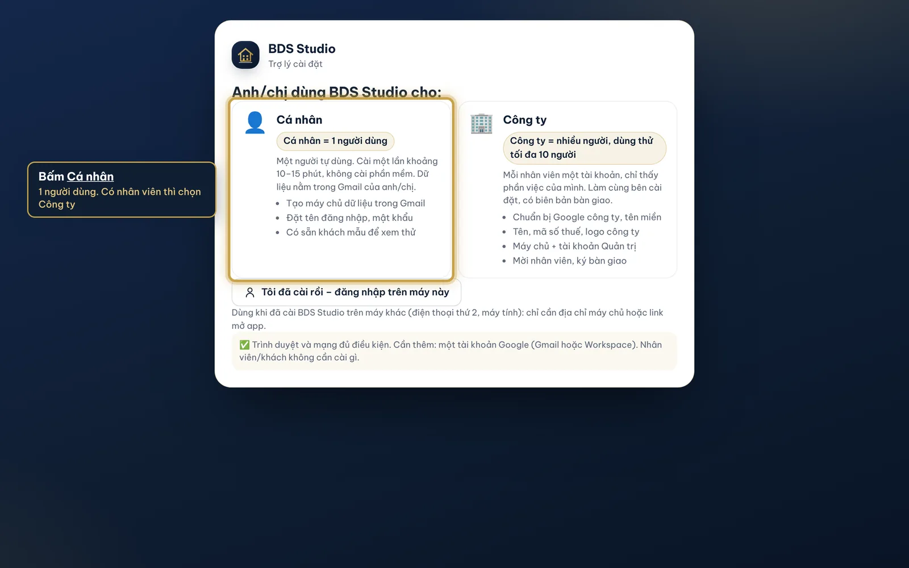
Bước 2. Bấm Tạo bản sao
Ở bước Tạo máy chủ, bấm nút vàng Tạo bản sao. Trang Google mở ở thẻ mới.
Để thẻ trang cài đặt mở – lát nữa quay lại.
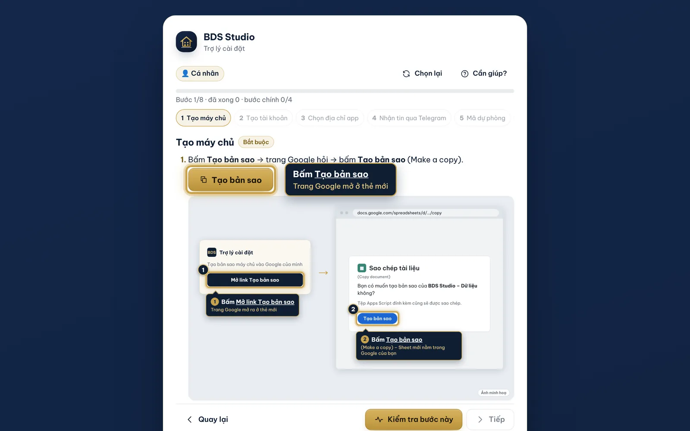
Phần 2 – Trên trang Google (5–10 phút)
Bước 3. Google: Tạo bản sao
- Bấm ảnh đại diện góc trên bên phải: phải là đúng Gmail muốn giữ dữ liệu.
Sai Gmail: bấm ảnh đại diện → chọn Gmail đúng (hoặc Thêm tài khoản khác). - Bấm Tạo bản sao (Make a copy).
- Sheet mới mở ra. Đây là máy chủ của anh/chị.
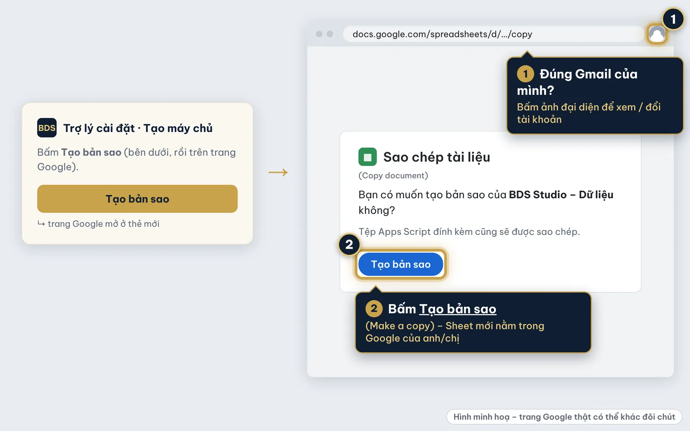
Bước 4. Menu BDS Studio › Cài đặt
- Trong Sheet vừa tạo, chờ 10–20 giây.
- Trên thanh menu, bấm BDS Studio → Cài đặt.
Chưa thấy menu BDS Studio? Bấm F5 (tải lại trang), chờ thêm.
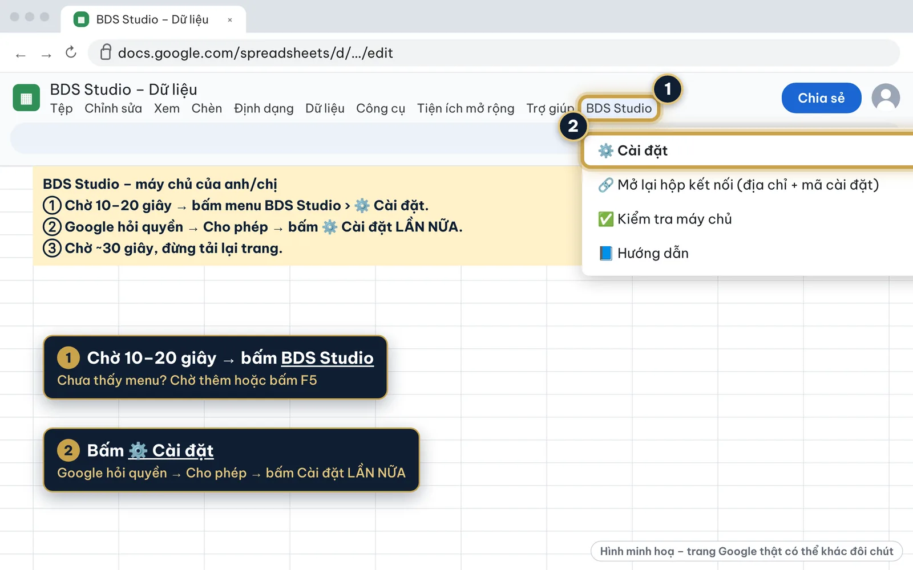
Bước 5. Cho phép Google
Google hỏi quyền cho máy chủ của chính anh/chị:
- Bấm Tiếp tục (Continue) hoặc Xem xét quyền (Review permissions), chọn đúng Gmail.
- Google ghi "Google chưa xác minh ứng dụng này". Đây là bình thường: mã nằm trong Sheet của chính anh/chị.
- Bấm Nâng cao (Advanced).
- Bấm dòng Đi tới … (không an toàn) (Go to … (unsafe)) ở cuối.
- Có ô Chọn tất cả thì tích vào. Bấm Cho phép (Allow). Có máy ghi Tiếp tục (Continue).
Không bấm Quay lại trang an toàn – bấm nút đó là phải làm lại.
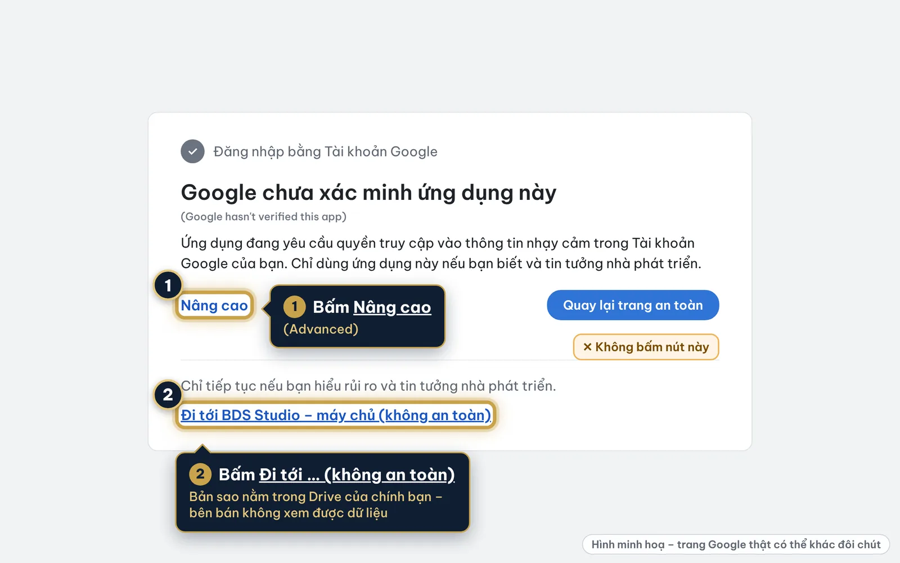
Bước 6. Hộp Triển khai máy chủ → mở Apps Script
- Hộp "BDS Studio – Triển khai máy chủ" hiện trong Sheet. Để hộp này mở.
Hộp chưa hiện: bấm lại BDS Studio › Cài đặt. - Trên thanh menu, bấm Tiện ích mở rộng › Apps Script (Extensions › Apps Script). Apps Script mở ở thẻ mới.
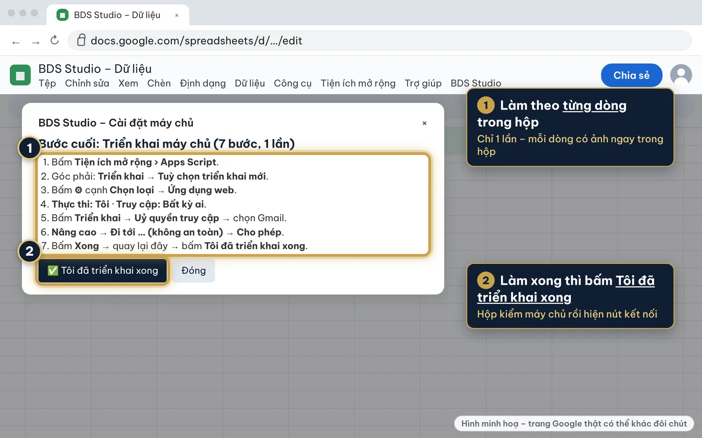
Bước 7. Triển khai → Tuỳ chọn triển khai mới
- Góc trên bên phải, bấm Triển khai (Deploy).
- Bấm Tuỳ chọn triển khai mới (New deployment).
Mục Quản lý triển khai trống là bình thường: bản sao Sheet không mang theo triển khai. Phải bấm Tuỳ chọn triển khai mới.
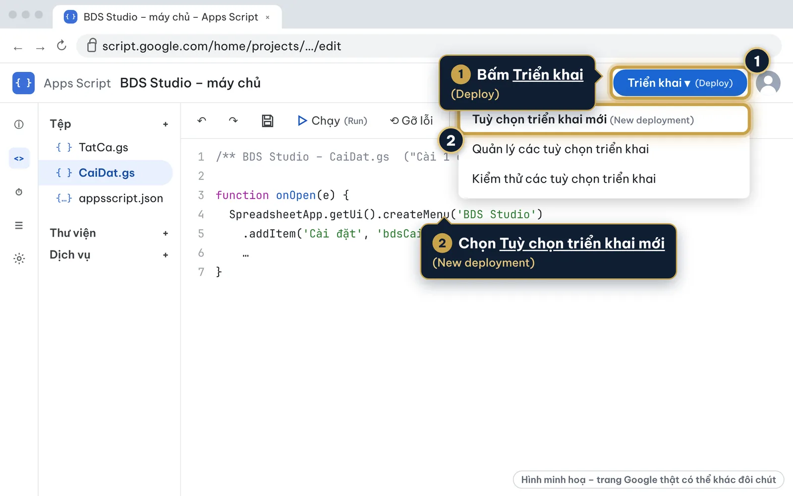
Bước 8. Chọn Ứng dụng web
- Bấm bánh răng ⚙ cạnh Chọn loại (Select type).
- Chọn Ứng dụng web (Web app).
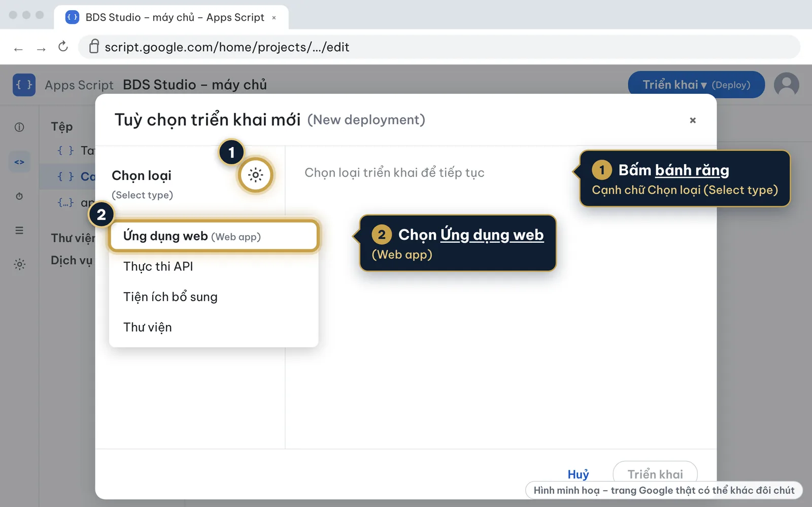
Bước 9. Tôi – Bất kỳ ai – Triển khai
- Ô Thực thi với tư cách (Execute as): chọn Tôi (Me).
- Ô Người có quyền truy cập (Who has access): chọn Bất kỳ ai (Anyone).
Không chọn "Bất kỳ ai có Tài khoản Google". Chọn sai là app không nối được. - Bấm Triển khai (Deploy).
- Nếu Google hỏi quyền lần nữa: làm như bước 5, bấm Cho phép.
- Hiện URL ứng dụng web (kết thúc bằng
/exec): bấm Xong (Done).
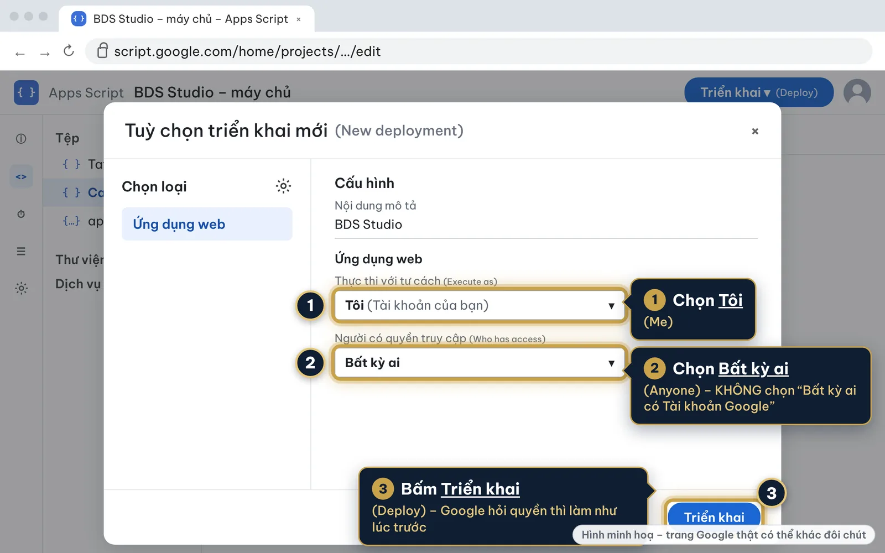
Bước 10. Quay lại Sheet → về trang cài đặt
- Quay lại thẻ Sheet (hộp Triển khai vẫn đang mở).
- Bấm Tôi đã triển khai xong.
- Bấm nút to Quay lại trang cài đặt và kết nối.
Trang cài đặt mở ở thẻ mới, tự điền địa chỉ máy chủ. Không cần chép gì.
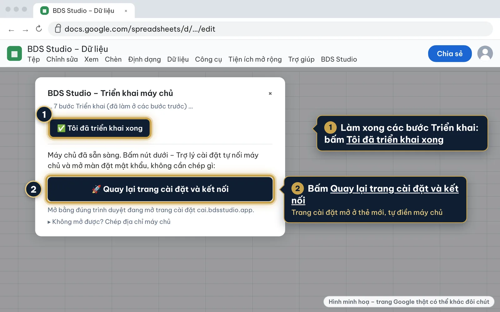
Phần 3 – Quay lại BDS Studio (3–5 phút)
Bước 11. Đặt mật khẩu
Email (Gmail vừa cài) và Tên đăng nhập đã điền sẵn.
- Gõ Mật khẩu từ 8 ký tự, gõ lại lần nữa ở ô dưới.
- Tên của anh/chị: bỏ trống được, sửa sau.
- Bấm Tạo mật khẩu.
- Ghi mật khẩu vào nơi an toàn. Bên bán không lấy lại được mật khẩu.
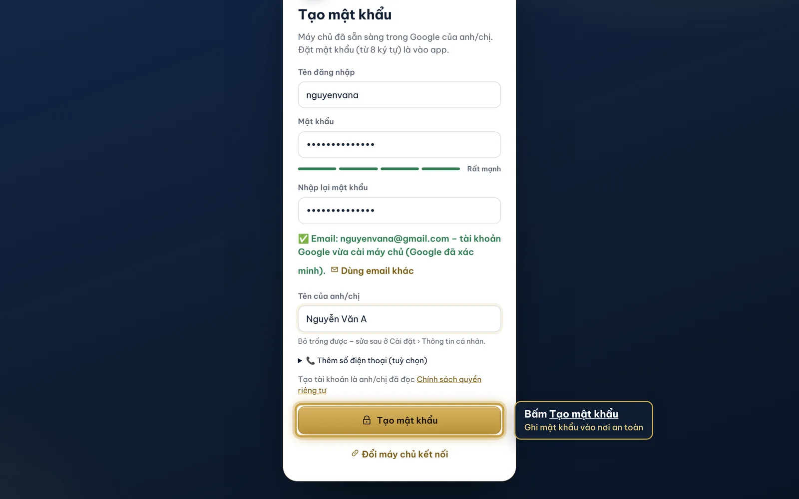
Bước 12. Chọn địa chỉ app
- Tên đã điền sẵn – sửa nếu muốn. Chỉ chữ thường không dấu, số, dấu
-.
Tên đã chọn không đổi được sau này. - Chờ dòng ✅ Còn trống.
- Bấm Tạo ngay. Chờ 1–3 phút.
Địa chỉ miễn phí dạng ten.bdsstudio.app: 0 đồng. Muốn dùng tên miền riêng: bấm Gán tên miền riêng (anh/chị tự trả tiền tên miền).
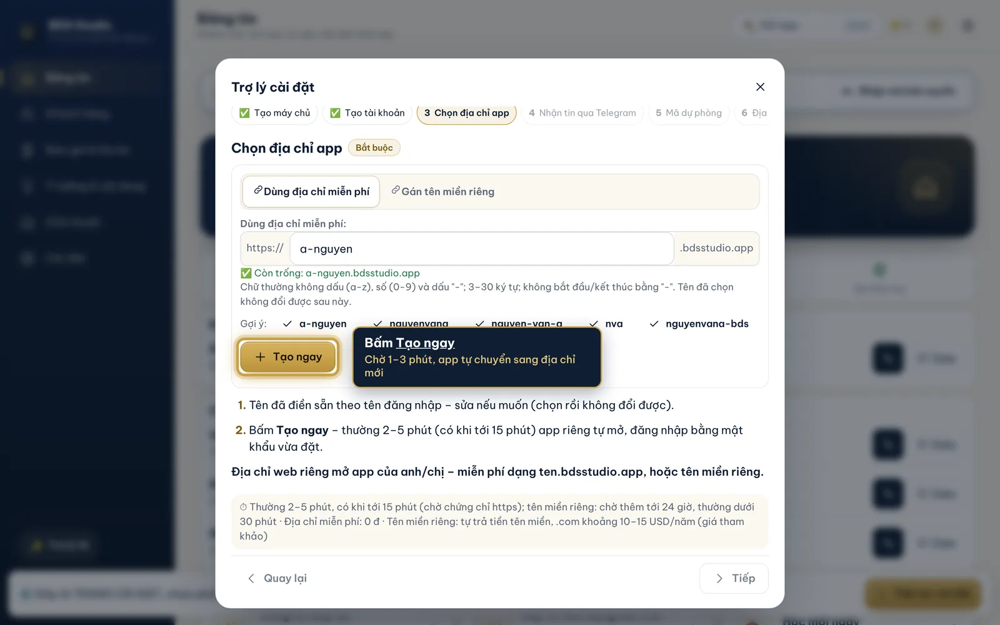
Bước 13. Đúng máy chủ của tôi
App riêng tự mở ở địa chỉ mới. App hỏi lại máy chủ cho chắc: bấm Đúng máy chủ của tôi.
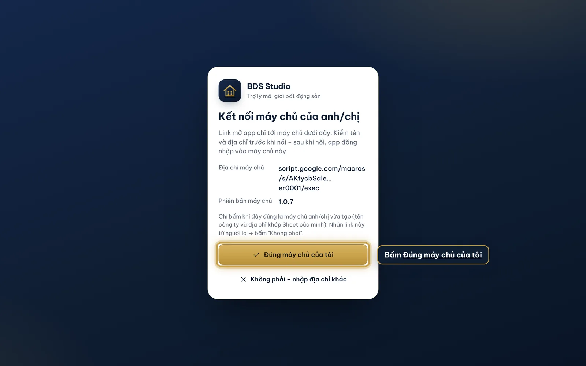
Bước 14. Đăng nhập
- Tên đăng nhập đã điền sẵn.
- Gõ mật khẩu vừa tạo, bấm Đăng nhập.
Lưu lại địa chỉ app (vd ten.bdsstudio.app) – từ nay mở app ở địa chỉ này, không mở trang cài đặt nữa.
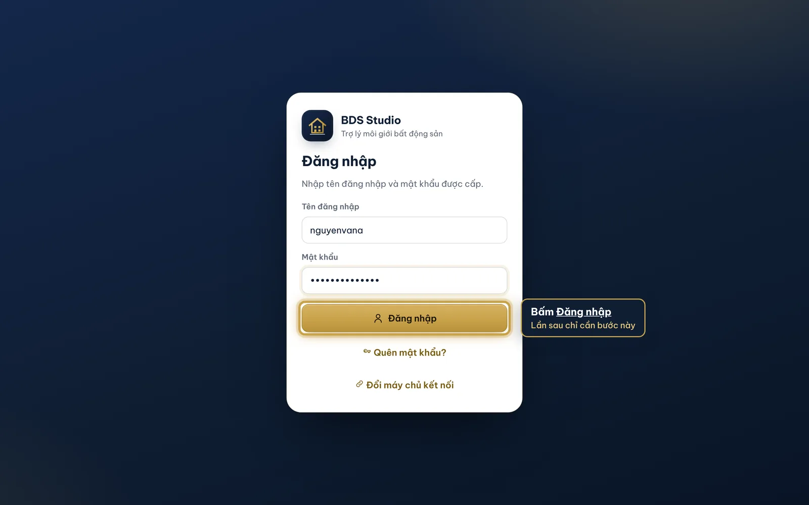
Xong!
Anh/chị đã vào app. App có sẵn khách Mẫu để xem thử; xem xong bấm Xoá toàn bộ dữ liệu mẫu khi muốn.
Nút Trợ lý cài đặt ở góc màn gợi ý vài bước tuỳ chọn (Telegram, AI…). Chưa cần thì bỏ qua.
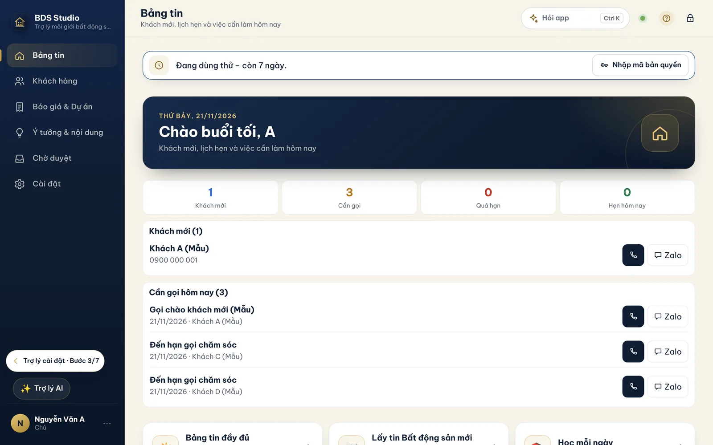
Dùng trên điện thoại: mở địa chỉ app, đăng nhập cùng tên và mật khẩu, rồi đưa app ra màn hình chính – xem Cài app ra màn hình chính.
Vướng ở đâu?
| Gặp | Cách làm |
|---|---|
| Bản sao nằm ở sai Gmail (Gmail công việc, Gmail của người nhà…) | Làm lại từ bước 2. Ở trang Google, bấm ảnh đại diện → chọn đúng Gmail rồi mới bấm Tạo bản sao. Bản sao ở Gmail sai: xoá trong Google Drive. |
| Trình duyệt đăng nhập nhiều Gmail, Google mở nhầm tài khoản | Mở cửa sổ ẩn danh (Chrome: Ctrl+Shift+N, Mac ⌘+Shift+N), chỉ đăng nhập Gmail đúng, mở lại cai.bdsstudio.app. |
| Không thấy menu BDS Studio trong Sheet | Bấm F5, chờ 10–20 giây. Vẫn không thấy: xem Lỗi thường gặp, mục 1. |
| Google báo "chưa xác minh" / không thấy nút Cho phép | Bấm Nâng cao (chữ nhỏ bên trái) → Đi tới … (không an toàn) ở cuối → Cho phép. |
| Quên chọn Bất kỳ ai (app báo "Lúc Triển khai chưa chọn 'Bất kỳ ai'") | Apps Script → Triển khai › Quản lý triển khai → bút chì Sửa → Bất kỳ ai → Triển khai. Chi tiết: Lỗi thường gặp, mục 5. |
| Ô truy cập không có Bất kỳ ai | Đang dùng Google công ty (Workspace) chặn lựa chọn này: nhờ quản trị viên cho phép, hoặc cài bằng Gmail cá nhân. |
| Bấm Tôi đã triển khai xong mà hộp báo chưa thấy | Làm lại bước 7–9 (nhớ Tuỳ chọn triển khai mới, không phải Quản lý triển khai). Hoặc mở mục Đã triển khai mà vẫn chưa thấy nút?, dán URL /exec vừa hiện ở bước 9, bấm Dùng URL này. |
| Nút Quay lại trang cài đặt và kết nối không mở được | Mở Không mở được? Chép địa chỉ máy chủ → Chép URL. Ở trang cài đặt, bước Tạo máy chủ, dán vào ô Địa chỉ máy chủ (kết thúc bằng /exec) → Kiểm tra bước này. App hỏi mã cài đặt 6 số: đọc mã trong hộp của Sheet. |
| Làm trên điện thoại / iPad | Không làm được. Trang cài đặt có nút Chép link – gửi link sang máy tính rồi cài ở đó. |
Vẫn vướng: trong Trợ lý cài đặt bấm Cần giúp? – app soạn sẵn báo cáo gửi bên hỗ trợ. Giữ địa chỉ /exec riêng tư, đừng gửi lên nhóm chat.